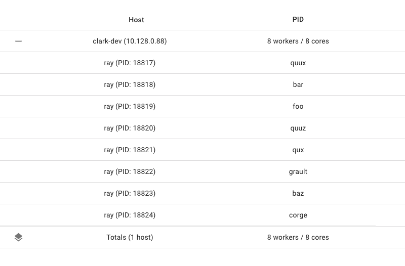

Miscellaneous Topics
Contents
Miscellaneous Topics#
This page will cover some miscellaneous topics in Ray.
Dynamic Remote Parameters#
You can dynamically adjust resource requirements or return values of ray.remote during execution with .options.
For example, here we instantiate many copies of the same actor with varying resource requirements. Note that to create these actors successfully, Ray will need to be started with sufficient CPU resources and the relevant custom resources:
import ray
@ray.remote(num_cpus=4)
class Counter(object):
def __init__(self):
self.value = 0
def increment(self):
self.value += 1
return self.value
a1 = Counter.options(num_cpus=1, resources={"Custom1": 1}).remote()
a2 = Counter.options(num_cpus=2, resources={"Custom2": 1}).remote()
a3 = Counter.options(num_cpus=3, resources={"Custom3": 1}).remote()
You can specify different resource requirements for tasks (but not for actor methods):
ray.init(num_cpus=1, num_gpus=1)
@ray.remote
def g():
return ray.get_gpu_ids()
object_gpu_ids = g.remote()
assert ray.get(object_gpu_ids) == []
dynamic_object_gpu_ids = g.options(num_cpus=1, num_gpus=1).remote()
assert ray.get(dynamic_object_gpu_ids) == [0]
And vary the number of return values for tasks (and actor methods too):
@ray.remote
def f(n):
return list(range(n))
id1, id2 = f.options(num_returns=2).remote(2)
assert ray.get(id1) == 0
assert ray.get(id2) == 1
And specify a name for tasks (and actor methods too) at task submission time:
import setproctitle
@ray.remote
def f(x):
assert setproctitle.getproctitle() == "ray::special_f"
return x + 1
obj = f.options(name="special_f").remote(3)
assert ray.get(obj) == 4
This name will appear as the task name in the machine view of the dashboard, will appear as the worker process name when this task is executing (if a Python task), and will appear as the task name in the logs.
Overloaded Functions#
Ray Java API supports calling overloaded java functions remotely. However, due to the limitation of Java compiler type inference, one must explicitly cast the method reference to the correct function type. For example, consider the following.
Overloaded normal task call:
public static class MyRayApp {
public static int overloadFunction() {
return 1;
}
public static int overloadFunction(int x) {
return x;
}
}
// Invoke overloaded functions.
Assert.assertEquals((int) Ray.task((RayFunc0<Integer>) MyRayApp::overloadFunction).remote().get(), 1);
Assert.assertEquals((int) Ray.task((RayFunc1<Integer, Integer>) MyRayApp::overloadFunction, 2).remote().get(), 2);
Overloaded actor task call:
public static class Counter {
protected int value = 0;
public int increment() {
this.value += 1;
return this.value;
}
}
public static class CounterOverloaded extends Counter {
public int increment(int diff) {
super.value += diff;
return super.value;
}
public int increment(int diff1, int diff2) {
super.value += diff1 + diff2;
return super.value;
}
}
ActorHandle<CounterOverloaded> a = Ray.actor(CounterOverloaded::new).remote();
// Call an overloaded actor method by super class method reference.
Assert.assertEquals((int) a.task(Counter::increment).remote().get(), 1);
// Call an overloaded actor method, cast method reference first.
a.task((RayFunc1<CounterOverloaded, Integer>) CounterOverloaded::increment).remote();
a.task((RayFunc2<CounterOverloaded, Integer, Integer>) CounterOverloaded::increment, 10).remote();
a.task((RayFunc3<CounterOverloaded, Integer, Integer, Integer>) CounterOverloaded::increment, 10, 10).remote();
Assert.assertEquals((int) a.task(Counter::increment).remote().get(), 33);
Inspecting Cluster State#
Applications written on top of Ray will often want to have some information or diagnostics about the cluster. Some common questions include:
How many nodes are in my autoscaling cluster?
What resources are currently available in my cluster, both used and total?
What are the objects currently in my cluster?
For this, you can use the global state API.
Node Information#
To get information about the current nodes in your cluster, you can use ray.nodes():
- ray.nodes()[source]
Get a list of the nodes in the cluster (for debugging only).
- Returns
Information about the Ray clients in the cluster.
DeveloperAPI: This API may change across minor Ray releases.
import ray
ray.init()
print(ray.nodes())
[{'NodeID': '2691a0c1aed6f45e262b2372baf58871734332d7',
'Alive': True,
'NodeManagerAddress': '192.168.1.82',
'NodeManagerHostname': 'host-MBP.attlocal.net',
'NodeManagerPort': 58472,
'ObjectManagerPort': 52383,
'ObjectStoreSocketName': '/tmp/ray/session_2020-08-04_11-00-17_114725_17883/sockets/plasma_store',
'RayletSocketName': '/tmp/ray/session_2020-08-04_11-00-17_114725_17883/sockets/raylet',
'MetricsExportPort': 64860,
'alive': True,
'Resources': {'CPU': 16.0, 'memory': 100.0, 'object_store_memory': 34.0, 'node:192.168.1.82': 1.0}}]
The above information includes:
NodeID: A unique identifier for the raylet.
alive: Whether the node is still alive.
NodeManagerAddress: PrivateIP of the node that the raylet is on.
Resources: The total resource capacity on the node.
MetricsExportPort: The port number at which metrics are exposed to through a Prometheus endpoint.
Resource Information#
To get information about the current total resource capacity of your cluster, you can use ray.cluster_resources().
- ray.cluster_resources()[source]
Get the current total cluster resources.
Note that this information can grow stale as nodes are added to or removed from the cluster.
- Returns
- A dictionary mapping resource name to the total quantity of that
resource in the cluster.
DeveloperAPI: This API may change across minor Ray releases.
To get information about the current available resource capacity of your cluster, you can use ray.available_resources().
- ray.available_resources()[source]
Get the current available cluster resources.
This is different from
cluster_resourcesin that this will return idle (available) resources rather than total resources.Note that this information can grow stale as tasks start and finish.
- Returns
- A dictionary mapping resource name to the total quantity of that
resource in the cluster.
DeveloperAPI: This API may change across minor Ray releases.
Running Large Ray Clusters#
Here are some tips to run Ray with more than 1k nodes. When running Ray with such a large number of nodes, several system settings may need to be tuned to enable communication between such a large number of machines.
Tuning Operating System Settings#
Because all nodes and workers connect to the GCS, many network connections will be created and the operating system has to support that number of connections.
Maximum open files#
The OS has to be configured to support opening many TCP connections since every
worker and raylet connects to the GCS. In POSIX systems, the current limit can
be checked by ulimit -n and if it’s small, it should be increased according to
the OS manual.
ARP cache#
Another thing that needs to be configured is the ARP cache. In a large cluster,
all the worker nodes connect to the head node, which adds a lot of entries to
the ARP table. Ensure that the ARP cache size is large enough to handle this
many nodes.
Failure to do this will result in the head node hanging. When this happens,
dmesg will show errors like neighbor table overflow message.
In Ubuntu, the ARP cache size can be tuned in /etc/sysctl.conf by increasing
the value of net.ipv4.neigh.default.gc_thresh1 - net.ipv4.neigh.default.gc_thresh3.
For more details, please refer to the OS manual.
Tuning Ray Settings#
Note
There is an ongoing project focusing on improving Ray’s scalability and stability. Feel free to share your thoughts and use cases.
To run a large cluster, several parameters need to be tuned in Ray.
Resource broadcasting#
In Ray 2.3+, lightweight resource broadcasting is supported as an experimental feature.
Turning it on can significantly reduce GCS load and thus
improve its overall stability and scalability. To turn it on, this OS environment
should be set: RAY_use_ray_syncer=true. This feature will be turned on by
default in 2.4+.
Benchmark#
The machine setup:
1 head node: m5.4xlarge (16 vCPUs/64GB mem)
2000 worker nodes: m5.large (2 vCPUs/8GB mem)
The OS setup:
Set the maximum number of opening files to 1048576
- Increase the ARP cache size:
net.ipv4.neigh.default.gc_thresh1=2048net.ipv4.neigh.default.gc_thresh2=4096net.ipv4.neigh.default.gc_thresh3=8192
The Ray setup:
RAY_use_ray_syncer=trueRAY_event_stats=false
Test workload:
Test script: code
Number of actors |
Actor launch time |
Actor ready time |
Total time |
|---|---|---|---|
20k (10 actors / node) |
14.5s |
136.1s |
150.7s |